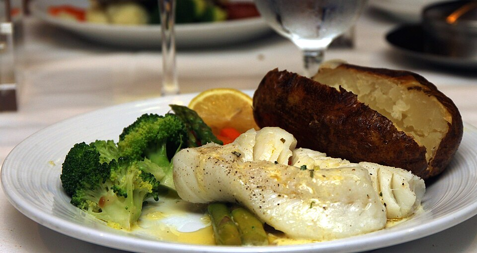

Dinner, Lunch, Protein, Quick, By Claude
4 6-oz portions seasoned/marinated fish from the counter (cod, halibut, salmon, or swordfish)
4 cups cooked rice or farro (see Batch Carbs)
1 bag (5 oz) mixed greens or shredded cabbage slaw
1 cucumber, sliced
Lemon-dill yogurt sauce (4 servings)
1/2 cup plain Greek yogurt
1 lemon, zest and juice
1 tablespoon chopped fresh dill (or 1 tsp dried)
1 small garlic clove, grated
Salt and pepper, water to thin
A 15-minute dinner built from Whole Foods' marinated or seasoned fish, batch rice, and bagged greens, with a quick lemon-yogurt sauce. Buy fish for 2 days at a time so it's fresh, or freeze the extra portions the day you buy them.
Heat the oven to 400°F, or heat an oiled nonstick or cast-iron skillet over medium-high.
Oven: put the fish on a parchment-lined pan and bake 10–14 minutes (about 10 minutes per inch of thickness) until it flakes. Skillet: 3–4 minutes per side.
Meanwhile, whisk the sauce ingredients together and reheat a portion of rice.
Build the bowl: rice, greens, cucumber, fish, and a spoonful of sauce. The sauce keeps 5 days.
Nutrition is for cod. Salmon adds about 200 calories of mostly healthy fats, which is fine on long-run days.
~430 CALORIES (with cod)
42G PROTEIN
5G FAT
52G CARBS
3G FIBER
Photo: Ling Cod with Baked Potato (15988408872).jpg by Prayitno / Thank you for (12 millions +) view from Los Angeles, USA, CC BY 2.0, via Wikimedia Commons. Representative image, not this exact recipe.
.jpg){kind=link}